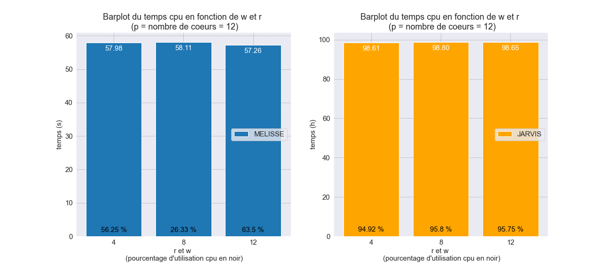
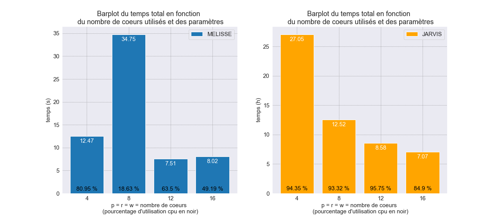
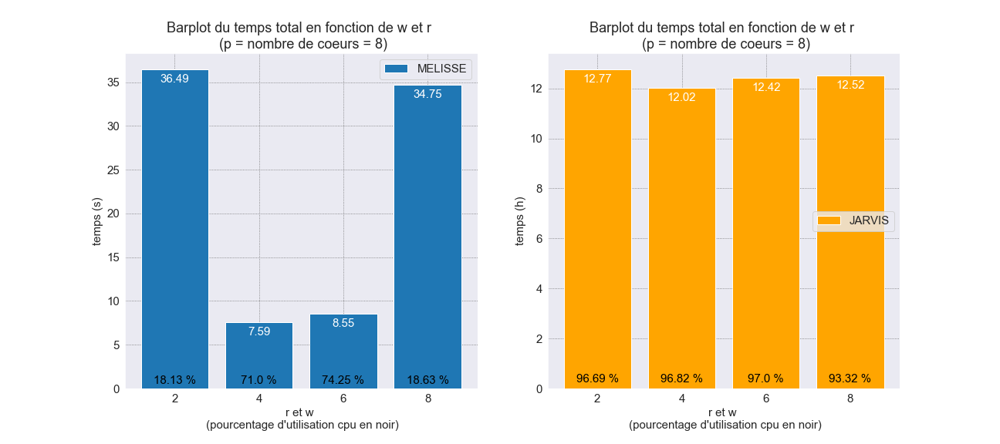
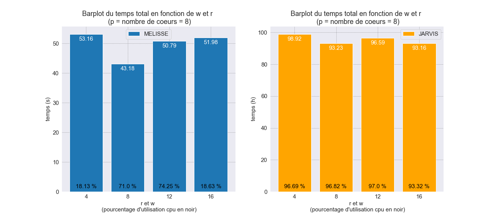

Ce document à pour objectif de comparer les différences entre le logiciel de "base calling" bcl2fastq et BCL convert, qui sont des locgiciels de "base calling" conçue par illumina pour leurs séquenceurs.
bcl2fastq :
Options utilisées en ligne de commande :
--inputdir ==> path des fichier BCL
--min-log-level ==>
--barcode-mismatches ==> nombre de mismatches acceptés sur les index
--runfolder-dir ==> path du répertoire où le run à été effectué
--output-dir ==> path du répertoire de sortie des fichiers générés par bcl2fastq (dont les FASTQ)
--use-base-mask ==> indique le nobre de bases pris en compte pour les index
-r ==> nombre de coeurs alloués en lecture (fichiers BCL)
-p ==> nombre de coeurs alloués pour le processus de bcl2fastq
-w ==> nombre de coeurs alloués en ecriture (FASTQ)
-d ==> nombre de coeurs alloués pour le démultipléxage
Autres options :
--sample-sheet ==> path de la sample sheet (par défaut : <runfolder-dir>/SampleSheet.csv)
Options de bcl2fasq dans les fichiers SampleSheet (seul le format V1 est accepté) :
Data section :
Lane
Sample_ID
Sample_name
Sample_plate
Sample_well
I7_index_ID
index
ìndex2
Sample_Project
Description
bcl-convert :
Option utilisées en ligne de commande :
--bcl-input-directory ==> path du répertoire où le run à été effectué
--output-directory ==> path du répertoire de sortie des fichiers générés par bcl-convert. cette option est obligatoire et le répertoire spécifié ne doit pas exister. (si le répertoire existe alors il faut utiliser --force / -f en plus)
--sample-sheet ==> path de la sample sheet (oblgatoire, par défaut : <--bcl-input-directory>/SampleSheet.csv)
Option non mentionnées dans la doc de bcl-convert :
--bcl-sampleproject-subdirectories ==> création de sous-répertoires Sample_ Project comme spécifié dans la SampleSheet
--bcl-num-decompression-threads ==> nombre de coeurs alloués en lecture (fichiers BCL)
--bcl-num-conversion-threads ==> nombre de coeurs alloués pour le processus de bcl2fastq
--bcl-num-compression-threads ==> nombre de coeurs alloués en ecriture (FASTQ)
--bcl-num-parallel-tiles ==> nombre de tâche effectuer en parallèle
Option de bcl-convert dans les fichiers SampleSheet (formats V1 et V2 acceptés) :
Data section (comme pour bcl2fastq):
Lane
Sample_ID
index
ìndex2
Sample_Project
Settings section :
BarcodeMismatchesIndex1
BarcodeMismatchesIndex2
OverrideCycles
Différences d'utilisations en ligne de commande (utilisé actuellement) :
| bcl2fastq | bcl-convert | changement utilisation |
|---|---|---|
--inputdir |
None | Inpossible de spécifier le path des BaseCalls |
--min-log-level |
? | ? |
--barcode-mismatches |
None | À mettre dans la Sample Sheet (dans la partie settings ==> BarcodeMismatchesIndex1 / BarcodeMismatchesIndex2) |
--runfolder-dir |
--bcl-input-directory |
même utilisation |
--output-dir |
--output-directory |
même utilisation, mais devient obligatoire (utiliser --force/-f si le rep de sortie existe déjà) |
--sample-sheet |
--sample-sheet |
même utilisation |
--use-base-mask |
None | À mettre dans la Sample Sheet (dans la partie settings ==> OverrideCycles) |
-r |
--bcl-num-decompression-threads |
même utilisation |
-p |
--bcl-num-conversion-threads |
même utilisation |
-w |
--bcl-num-compression-threads |
même utilisation |
| None | --bcl-num-parallel-tiles |
spécifier le nombre de tâche à efectuer en parallèle |
| bcl2fastq | ||||
|---|---|---|---|---|
| MELISSE | ||||
| param utilisé | temps écoulé (h) | temps cpu | utilisation cpu (%) | mémoire utilisé (Gb) |
| p4 w4 r4 | 00:00:12.47 | 40.38 | 80.95 | 2.346448 |
| p8 w4 r4 | 00:00:07.59 | 43.18 | 71.12 | 2.361540 |
| p12 w4 r4 | 00:00:06.45 | 43.21 | 55.75 | 2.386592 |
| p16 w4 r4 | 00:00:11.31 | 62.62 | 34.56 | 2.365040 |
| JARVIS | ||||
| param utilisé | temps écoulé (h) | temps cpu | utilisation cpu (%) | mémoire utilisé (Gb) |
| p4 w4 r4 | 10:48:31 + 11:35:17 | 154644.12 + 161789.16 | 99.25 + 96.75 | 12.459632 + 26.311436 |
| p8 w4 r4 | 05:48:32 + 06:13:34 | 165298.55 + 170323.1 | 98.75 + 94.88 | 12.226456 + 29.826448 |
| p12 w4 r4 | 04:04:10 + 04:36:05 | 172296.87 + 182714.38 | 98.00 + 91.83 | 10.649516 + 35.187044 |
| p16 w4 r4 | 02:58:41 + 05:51:39 | 167139.05 + 314416.25 | 97.38 + 93.13 | 11.353516 + 43.053008 |


| bcl2fastq | ||||
|---|---|---|---|---|
| MELISSE | ||||
| param utilisé | temps écoulé (h) | temps cpu (s) | utilisation cpu (%) | mémoire utilisé (Gb) |
| p12 r4 w4 | 00:00:08.58 | 57.98 | 56.25 | 2.360844 |
| p12 r8 w8 | 00:00:18.38 | 58.11 | 26.33 | 2.354396 |
| p12 r12 w12 | 00:00:07.51 | 57.26 | 63.50 | 2.359704 |
| JARVIS | ||||
| param utilisé | temps écoulé (h) | temps cpu (s) | utilisation cpu (%) | mémoire utilisé (Gb) |
| p12 r4 w4 | 04:04:10 + 04:36:05 | 172296.87 + 182714.38 | 98.00 + 91.83 | 10.649516 + 35.187044 |
| p12 r8 w8 | 03:57:35 + 04:38:53 | 168491.81 + 187202.29 | 98.42 + 93.17 | 12.122880 + 37.427376 |
| p12 r12 w12 | 04:01:35 + 04:34:25 | 171504.55 + 183624.04 | 98.58 + 92.92 | 11.171612 + 38.953616 |



| bcl2fastq | ||||
|---|---|---|---|---|
| MELISSE | ||||
| param utilisé | temps écoulé (h) | temps cpu | utilisation cpu (%) | mémoire utilisé (Gb) |
| p4 r4 w4 | 00:00:12.47 | 40.38 | 80.95 | 2.346448 |
| p8 r8 w8 | 00:00:34.75 | 51.98 | 18.63 | 1.869064 |
| p12 r12 w12 | 00:00:07.51 | 57.30 | 63.50 | 2.359704 |
| p16 r16 w16 | 00:00:08.02 | 60.47 | 49.19 | 2.360132 |
| JARVIS | ||||
| param utilisé | temps écoulé (h) | temps cpu | utilisation cpu (%) | mémoire utilisé (Gb) |
| p4 r4 w4 | 10:21:47 + 16:42:32 | 148369.72 + 215649.95 | 99.20 + 89.50 | 10.226312 + 22.814680 |
| p8 r8 w8 | 05:40:55 + 06:51:09 | 160477.90 + 174911.9 | 98.00 + 88.63 | 10.509808 + 30.503808 |
| p12 r12 w12 | 04:01:35 + 04:34:25 | 171504.55 + 183624.04 | 98.58 + 92.92 | 11.171612 + 38.953616 |
| p16 r16 w16 | 03:24:32 + 03:40:24 | 165158.86 + 181473.41 | 84.06 + 85.75 | 11.793640 + 44.042212 |



| bcl2fastq | ||||
|---|---|---|---|---|
| MELISSE | ||||
| param utilisé | temps écoulé (h) | temps cpu | utilisation cpu (%) | mémoire utilisé (Gb) |
| p8 r2 w2 | 00:00:36.49 | 53.16 | 18.13 | 1.872452 |
| p8 r4 w4 | 00:00:07.59 | 43.18 | 71.00 | 2.361540 |
| p8 r6 w6 | 00:00:08.55 | 50.79 | 74.25 | 2.346620 |
| p8 r8 w8 | 00:00:34.75 | 51.98 | 18.63 | 1.869064 |
| JARVIS | ||||
| param utilisé | temps écoulé (h) | temps cpu | utilisation cpu (%) | mémoire utilisé (Gb) |
| p8 r2 w2 | 05:56:38 + 06:50:56 | 167567.71 + 188531.43 | 97.88 + 95.5 | 10.172972 + 27.979624 |
| p8 r4 w4 | 05:48:32 + 06:13:34 | 165298.55 + 170323.10 | 98.75 + 94.88 | 12.226456 + 29.826448 |
| p8 r6 w6 | 05:54:49 + 06:31:55 | 167594.55 + 180114.75 | 98.38 + 95.63 | 10.559480 + 30.853492 |
| p8 r8 w8 | 05:40:55 + 06:51:09 | 160477.90 + 174911.90 | 98.0 + 88.63 | 10.509808 + 30.503808 |



| type run | param utilisé | temps écoulé (h : m : s) | temps cpu (h : m : s) | utilisation cpu (%) | mémoire utilisé (Gb) |
|---|---|---|---|---|---|
| MELISSE | p4 w4 r4 | 00:00:12.47 | 00:00:40 | 80.95 | 2.346448 |
| MELISSE | p8 w4 r4 | 00:00:07.59 | 00:00:43 | 71.12 | 2.361540 |
| MELISSE | p12 w4 r4 | 00:00:06.45 | 00:00:43 | 55.75 | 2.386592 |
| MELISSE | p16 w4 r4 | 00:00:11.31 | 00:01:02 | 34.56 | 2.365040 |
| MELISSE | p12 r8 w8 | 00:00:18.38 | 00:00:58 | 26.33 | 2.354396 |
| MELISSE | p8 r8 w8 | 00:00:34.75 | 00:00:51 | 18.63 | 1.869064 |
| MELISSE | p12 r12 w12 | 00:00:07.51 | 00:00:57 | 63.50 | 2.359704 |
| MELISSE | p16 r16 w16 | 00:00:08.02 | 00:01:00 | 49.19 | 2.360132 |
| MELISSE | p8 r2 w2 | 00:00:36.49 | 00:00:53 | 18.13 | 1.872452 |
| MELISSE | p8 r6 w6 | 00:00:08.55 | 00:00:50 | 74.25 | 2.346620 |
| type run | param utilisé | temps écoulé (h : m : s) | temps cpu (h : m : s) | utilisation cpu (%) | mémoire utilisé (Gb) |
|---|---|---|---|---|---|
| JARVIS | p4 w4 r4 | 10:48:31 + 11:35:17 | 42:57:24 + 44:56:29 | 99.25 + 96.75 | 12.459632 + 26.311436 |
| JARVIS | p8 w4 r4 | 05:48:32 + 06:13:34 | 45:54:58 + 47:18:43 | 98.75 + 94.88 | 12.226456 + 29.826448 |
| JARVIS | p12 w4 r4 | 04:04:10 + 04:36:05 | 47:51:36 + 50:45:14 | 98.00 + 91.83 | 10.649516 + 35.187044 |
| JARVIS | p16 w4 r4 | 02:58:41 + 05:51:39 | 46:25:39 + 87:20:16 | 97.38 + 93.13 | 11.353516 + 43.053008 |
| JARVIS | p12 r8 w8 | 03:57:35 + 04:38:53 | 46:48:11 + 52:00:02 | 98.42 + 93.17 | 12.122880 + 37.427376 |
| JARVIS | p8 r8 w8 | 05:40:55 + 06:51:09 | 44:34:37 + 48:35:11 | 98.00 + 88.63 | 10.509808 + 30.503808 |
| JARVIS | p12 r12 w12 | 04:01:35 + 04:34:25 | 47:38:24 + 51:00:24 | 98.58 + 92.92 | 11.171612 + 38.953616 |
| JARVIS | p16 r16 w16 | 03:24:32 + 03:40:24 | 45:52:38 + 50:24:33 | 84.06 + 85.75 | 11.793640 + 44.042212 |
| JARVIS | p8 r2 w2 | 05:56:38 + 06:50:56 | 46:32:47 + 52:22:11 | 97.88 + 95.5 | 10.172972 + 27.979624 |
| JARVIS | p8 r6 w6 | 05:54:49 + 06:31:55 | 46:33:14 + 50:01:54 | 98.38 + 95.63 | 10.559480 + 30.853492 |